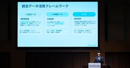
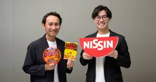
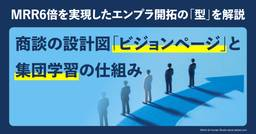
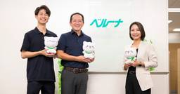

MarkeZine:新着一覧
https://markezine.jp/
翔泳社が運営するマーケター向け専門メディア。MarkeZineはデジタルを中心とした広告・マーケティングに関する情報を多角的な視点で毎日提供します。
フィード

「SNS話題量は最多なのにAI推奨度は最下位」のカラクリ 競合に負けないブランド力の育て方
MarkeZine:新着一覧
検索結果ではなくAIの回答がブランドと消費者の最初の接点となる今、企業は自社の“語られ方”を正確に捉える必要があります。その把握には、社内データに加えてニュースメディア、SNS、比較サイトなど、AIの引用元となる外部データが不可欠です。「MarkeZine Day 2026 Autumn」では、世界有数の外部データを提供するグローバル企業のMeltwaterが登壇し、データを横断的に分析するメリットとその方法を解説しました。
2日前
顕在層の頭打ちを突破！サイトPV2倍のリハス、CPA3割減のシルバーライフのSmartNews活用例
MarkeZine:新着一覧
Google広告やMeta広告などで安定した成果を得られるようになっても、顕在層ばかりにアプローチしていては、いつしか「頭打ち」が来てしまう。しかし、潜在層向け施策は成果が見えにくく、挑戦に足踏みしている中小～中堅企業も多いだろう。今回は潜在層リーチに強い「SmartNews Ads」を導入した2社に取材。障がい者就労支援などを手がけるリハスと、弁当配食サービスなどを展開するシルバーライフは、「記事LP」を配信してPV増加、CPA削減といった顕著な成果を得ている。2社はなぜSmartNews Adsを選び、どのように潜在層へのアプローチを実現したのか、活用のコツを聞いた。
2日前

50周年を迎えた「日清焼そばU.F.O.」がオリジナルIPを「コロコロコミック」で育てる理由
MarkeZine:新着一覧
「日清焼そばU.F.O.」は、2025年3月よりギャグ漫画「こい丸」を「月刊コロコロコミック」で連載している。なぜ既存IPとのコラボではなく、自社キャラクターを作り上げたのか。その背景にはα世代との長期的な関係構築という視点があった。ブランドに流れる思想から、オリジナルIP育成のコツまで、同社三浦氏と成瀬氏に詳しい話を聞いた。
2日前

MRR6倍を実現したエンプラ開拓の「型」を解説。 商談の設計図「ビジョンページ」と集団学習の仕組み
MarkeZine:新着一覧
SMB（Small and Medium Business）やMM（Mid Market）で成果を上げてきた営業手法が、エンタープライズ市場では通用しない。こうした「エンタープライズセールスの壁」を、どう乗り越えればよいのでしょうか。ディグルでエンタープライズセールスを率いる松本翔吾氏がエンタープライズセールスの「型」と、商談経験を組織の学びに変えるチーム運営について解説。約1年間の苦戦を経てエンタープライズ領域のMRR（月次経常収益）を6倍に伸ばした「商談の設計」と「集団学習の仕組み」について、具体的に解説します。
2日前
「検索する」から「AIに相談する」へ──米Gapが仕掛けるファッションECの新たな購買体験 1
1
MarkeZine:新着一覧
「週末のディナーに着ていく服が欲しい」「手持ちのジーンズに合うジャケットを探している」。そんな曖昧な希望をAIに伝えるだけで、商品を提案してもらう。ファッションECの購買体験が変わり始めている。2026年10月、米アパレル大手Gap Inc.は、生成AIを活用した新たなショッピング体験を発表した。注目すべきは、自社ECサイトへの会話型AI検索の導入と、外部のAIファッションサービスを活用したスタイリング体験を並行して進めている点だ。消費者がブランドのサイトを訪れる前に、AIが商品との出会いを生み出す。そんな時代に、企業のEC戦略やマーケティングはどう変わるのだろうか。
2日前
カスタマージャーニーは「描く」のではなく「あぶり出す」？行動の“順序”から顧客実態を理解する手法とは
MarkeZine:新着一覧
AI時代、顧客の情報接触は多様化し、たどる経路は一人ひとり細かく異なる。それでもカスタマージャーニーは、今も「描く」ものとして扱われがちだ。MarkeZine Day 2026 Autumnに登壇した電通クロスブレインの中村洋介氏は、行動の順序を機械学習にかけて顧客の実態をあぶり出す「データドリブン・カスタマージャーニー（DCJ）」というソリューションを紹介。具体的な分析事例を交えながら、主観に頼らず「顧客の実像」を捉える方法を語った。
3日前

リタゲ一辺倒から「LTVを伸ばすデータ活用」へ。ベルーナが実現したROAS36％・新規率10pt改善
MarkeZine:新着一覧
激化する市場環境のなか、広告の獲得効率維持に課題を抱えていたベルーナ。同社はリターゲティング中心の運用を見直し、自社データを活用した新たな配信設計に取り組んでいる。結果として、優良顧客向けの配信を加えた運用では、自社ECの売上136.4％増、ROASは36％改善。かねてからの課題であった新規獲得率も、約10ポイント改善した。顧客獲得とLTV向上の両立を目指す、同社のキャンペーン設計とデータ連携の実践例について話をうかがった。
3日前
セブン‐イレブンはリテールメディア市場をどう変えるのか？電通・CAと始動した新会社の現在地
MarkeZine:新着一覧
全国約2万2,000店舗と購買データを活かし、リテールメディア事業の拡大を目指すセブン‐イレブン・ジャパン。2026年9月には、電通、サイバーエージェントとの合弁会社「セブン‐イレブン・アドコネクト」が事業を開始した。本記事では、セブン‐イレブン・アドコネクト 事業推進本部長の大石健司氏に取材。関連商品売上が他店比112％となった熱中症アラート連動配信など、天候・店舗の状況に応じた広告配信の事例や新体制での変化、効果測定の課題を通じて、同社リテールメディアの現在地を聞いた。
3日前
【20代必読】書類全滅からマーケ責任者へ。レバレジーズ西村さんに学ぶ「2社目の選び方」
MarkeZine:新着一覧
本連載では、広告・マーケティング・インターネットサービス業界に特化し、1万人以上の転職や副業のキャリア設計支援を行ってきたホワイトグラッシーズ代表取締役CEOの野崎大輔（白メガネ）さんが、同領域で活躍中の業界人が歩んできたキャリアを聞き出しながら、人生100年時代におけるキャリア設計のヒントを探ります。今回は、レバレジーズで、「レバウェル保育士」のマーケティング責任者と、「レバウェル」のデジタルプロモーションチームのリーダーを兼任する 西村哲志さんが登場。20代で「全部乗せ」のポジションを獲得するまでの道のりを伺いました。新卒でマーケティングの仕事をしたい方や、支援会社から事業会社への転職を望む方は必読です。
3日前

認知の先の「特長認知」を動かす！スーパードライがSmartNewsで挑む「量×質」のアテンション戦略
MarkeZine:新着一覧
動画・SNSの「ながら見」が広がり、「リーチしても広告が見られない」時代。アサヒビールはスーパードライのメインメッセージをより広く・深く届け、商品の特長認知を伸ばすためにSmartNewsを活用している。媒体の選定理由からフォーマットの活用方法、クロスメディア調査で実証された成果とそこから得た知見までを、広告主・広告会社・媒体社の三者鼎談で読み解いていく。
3日前
Amazonの購買シグナルをAIペルソナ化。博報堂の開発で実現した生活者の本音に基づくマーケ戦略策定
MarkeZine:新着一覧
生活者の暮らしや思想が複雑化・多様化する現代、生活者の「本音」に基づいてマーケティング戦略を策定し、施策に落とし込むことの重要性が増している。従来のインタビュー調査や購買シグナルの活用が再考されるなか、博報堂は、Amazonが提供する生活者の多様なシグナルをマーケティング戦略に循環させるソリューション「Jitsulog Chat（ジツログ・チャット）」を開発した。本記事では、博報堂とAmazonの両社に「Jitsulog Chat」の開発背景や実際の活用事例を取材。 生活者の行動全般に及ぶ豊富なシグナルと生活者発想の観点に基づき設計された「AIペルソナ」との対話を介して「ファネルを遡り、拡大する」新たなマーケティング戦略の描き方について聞いた。
4日前
チームが疲弊する原因は現場にない。組織づくりで最初に決めるべき「最上段」とは 1
MarkeZine:新着一覧
メンバーは懸命に動いているのに、組織がうまく回らない──。その原因は現場ではなく、もっと手前にあるのかもしれない。本連載では、GO株式会社 執行役員の中西氏が、起業やスタートアップ経営での失敗と成功、そしてタクシーアプリ「GO」の法人向けサービス「GO BUSINESS」での実践をもとに、事業・組織づくりのリアルを解説する。第1回のテーマは「組織をつくるときに最初に決めること」だ。
4日前